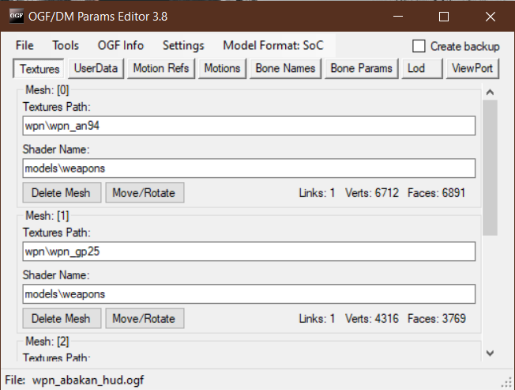

Modified OGF Editor by ValeroK
Info
| Program Developer | Mortany (Original Author) ValeroK |
| Described Version | 4.1 |
| Discussion Forum | Ap-pro forum topic |
About
Tool for working with *.ogf and *.dm format

Features
- Ability to work with all *.ogf parameters
- Ability to work with meshes in *.ogf
- Viewport
- Integration with OGF Viewer and OMF Editor
- Saving *.ogf in *.object, *.skl, *.skls, *.bones formats
- Hotkeys
- Fix Gunslinger models (models are fixed automatically when you save them)
Functionality
Hotkeys
- F4 - Load file
- Ctrl+S - Save file
- F6 - Save as
- F3 - Reload file
Buttons
| Button | Description |
|---|---|
| Load | Loads the selected *.ogf |
| Save | Save *.ogf |
| Save As | Save as *.ogf |
| Export | Export as *.object *.bones *.obj *.omf *.skl *.skls |
| Reload | Reloads the program |
| Exit | Exits the program |
| Button | Description |
|---|---|
| Open in Object Editor | Open in Object Editor |
| Import OGF Params | Imports parameters of another .ogf with selectable parameters |
| Recalc Normals | Recalculates the normals of the selected mesh |
| Recalc Bounding Box | Recalculates Bounding Box |
| Remove Progressive Meshes | Remove Progressive Meshes |
| Move/Rotate Model | Move/Rotate Model |
| Converter | NPC CoP to SoC NPC SoC to CoP |
Display information about the loaded OGF
| Field | Description |
|---|---|
| OGF Version | *.ogf file version |
| Model Type | Model type |
| Motions Refs | Motions references |
| Motions | Motions |
| Links | Links |
| Verts | Vertices count |
| Faces | Faces count |
| Field | Description |
|---|---|
| Source File | Source file |
| Converter | Converter |
| Creator | Creator |
| Editor | Editor |
| Export Time | Export time |
| Creation Time | Creation time |
| Modified Time | Modified time |
| Button |
|---|
| Repair timers |
| Field |
|---|
| Image path |
| FS Ltx path |
| Textures path |
| Game Mtl path |
| OMF Editor path |
| Object Editor path |
| Button |
|---|
| Load textures alpha channel in Viewport - slow loading |
Changes the format of motion references for the model
Checkboxes
| Field | Description |
|---|---|
| Create Backup | Creates a backup file |
Sections
Section with texture and shader path editing. Also here can delete or move meshes of the model (If there is only one mesh, you cannot delete it)
Mesh: [Mesh number]
| Field | Description |
|---|---|
| Texture Path: | Path to texture |
| Shader Name: | Shader name |
File with userdata
A field with paths for animation
Displays animations that are built into the model
If you right-click on this field, then the context menu will pop up where you can:
| Button | Description |
|---|---|
| Edit | Opens the OMF Editor (first, you need to specify the path to it in the settings) |
| Load | Loads selected *.omf files as an embedded movement |
| Delete | Deletes all downloaded animations |
Displays a list of bones and their number
Editing the bone parameter
Bone id: [Bone number]
| Field | Description |
|---|---|
| Bone Name | Bone name |
| Parent Bone | Parent bone |
| Material | Material |
| Mass | Mass |
| Center Of Mass | Center of mass |
| Position | Bone position |
| Rotation | Bone rotation |
Specifies the path to the LOD model
Viewport